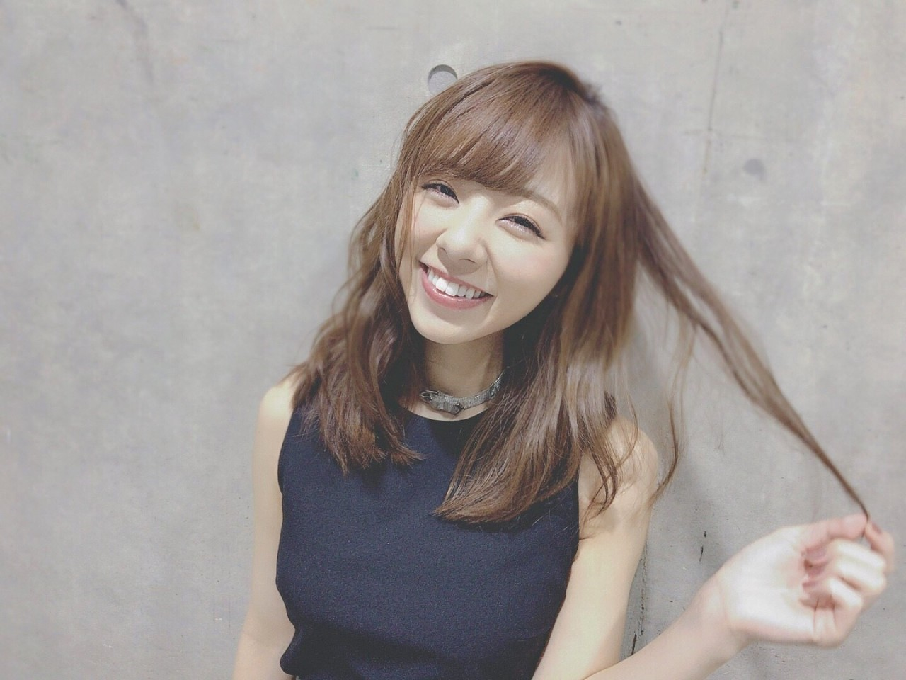
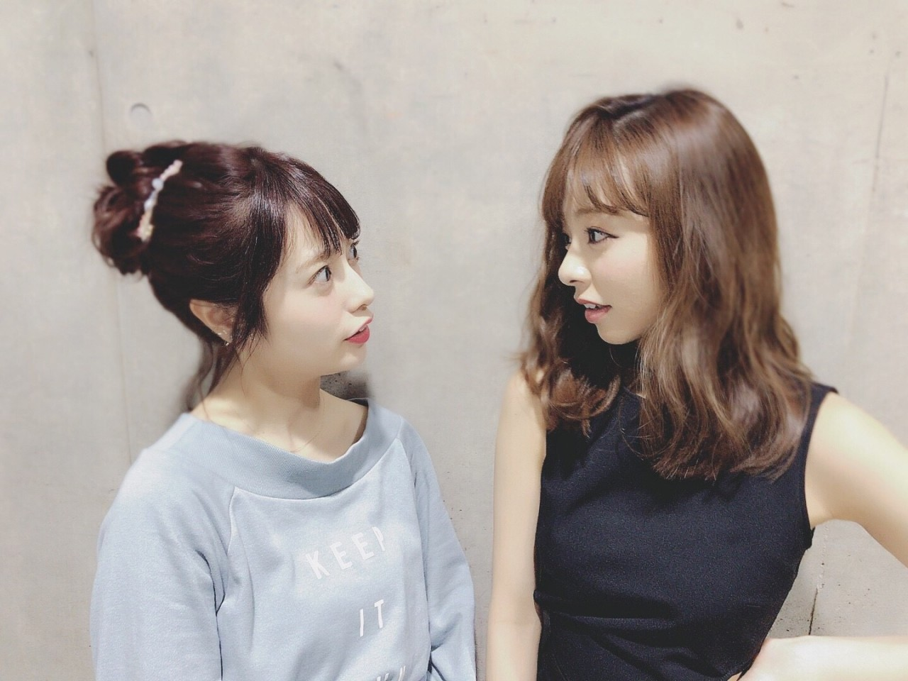
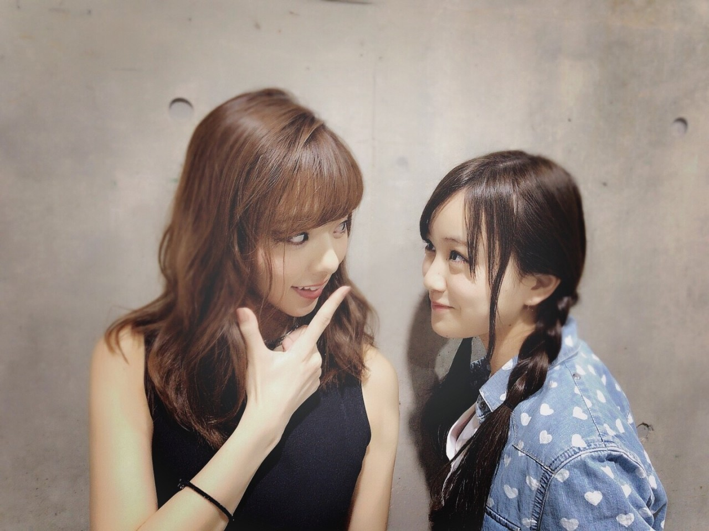
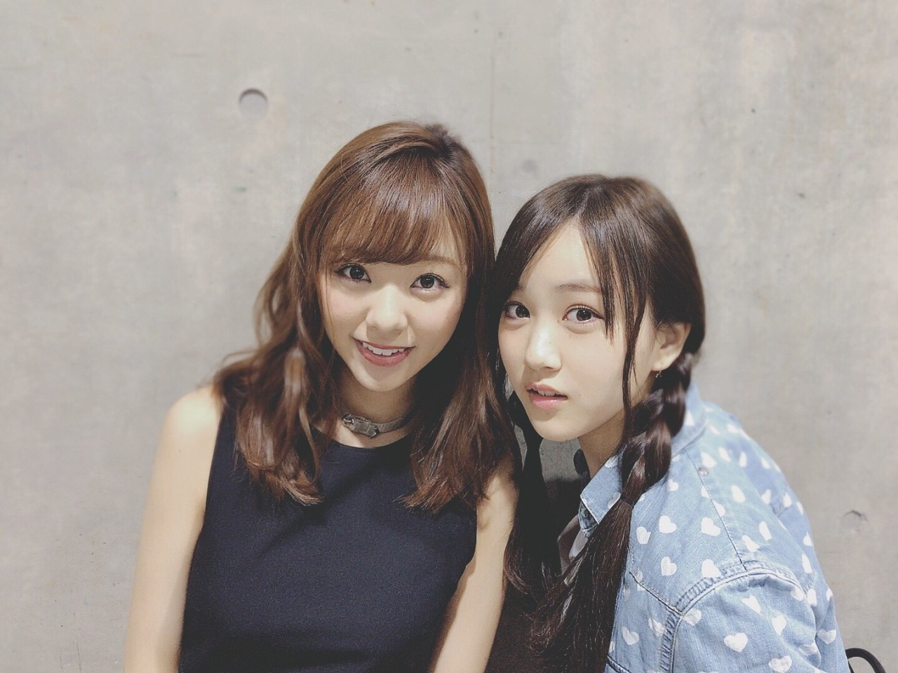

| 2017/05 03 Wed | メンバーとの写真久々かな？ メンバーとenjoy‼︎ ろってぃー |
お疲れ様です♡
ろってぃーです．
髪ひっぱるー

そーいや先日，
堀内健さん脚本の舞台，
堀内夜あけの会「堀内健演劇講演会 未来のファンタジー」を見に行ってきました‼︎
ホリケンさんにお会いした事なかったんですが，元々ホリケンさんワールドが大好きでいつもテレビの前では爆笑でした笑
そして舞台の方もホリケンさんワールド全開で本当に楽しかったです!
実はホリケンさん、、私の親に顔が似ててるんです 笑 目のひょこっとした感じと鼻がスラッと高い所...笑
舞台後にお会いしたんですが，ホリケンさんも出川さんもTVで見たまんまの本当に楽しくてhappyな方々でした♪♪
あみも，あみらしくて本当に面白かったし可愛かったです(^.^)
そして舞台後，一緒にいた私，かりん，ちはるの3人でカラオケに行ってきましたー‼︎
アンダラの時から「ライブ終わったらカラオケ行こ行こー‼︎」って話てたんですよ．
色んな歌聴けたし歌えたし最高に楽しかったです(^.^)
「何歌ったのー？」ってよく質問あるので先に紹介しておきますね♡（覚えてる分だけ 笑）
・福原美穂『LOVE～winter song』
・Superfly『Bi-Li-Li Emotion』
・BIGBANG『ガラガラGO‼︎』
・Dream『希望の光』
・村上佳佑『まもりたい～この両手の中』 とかですかね♪♪♪
どバラードを歌う感じじゃなかったのでこんな感じの曲を選曲しましたー！ その時のメンバーで歌選んだりもする 笑
ぁ 少し前は私，かりん，いおり，まあやの4人でも行きました．
そんな感じで久々にメンバーとの写真も貼りたいと思います♡笑
ゆうり 私

にこ

私 みなみ

にこ

はーい♡ と言うことで，前回も沢山コメント頂いたんですが，前回を上回る事ができるかなー？
今日も1日お疲れ様でした.＊
おやすみなさい(^.^)
ありがと♡
コメント(411)
2017/05/03 21:06